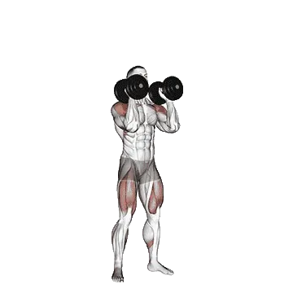

Dumbbell push press
Dumbbell push press menampilkan berat rata-rata dan standar kekuatan sebagai referensi untuk kategori bahu. Otot utama: Deltoid, Triseps brachii, Biseps brachii.

Berat rata-rata: Menengah
Acuan untuk level menengah.
Pria
32 kg
Wanita
16 kg
Berat rata-rata Dumbbell push press [1RM]
| Level | ||
|---|---|---|
| Dasar | 10 kg | 5 kg |
| Pemula | 19 kg | 10 kg |
| Menengah | 32 kg | 16 kg |
| Mahir | 47 kg | 23 kg |
| Pro | 65 kg | 31 kg |
Catatan: standar ini adalah estimasi 1RM berdasarkan lifter rata-rata. Berat badan, usia, dan faktor pribadi lain dapat memengaruhi hasil. Lihat data detail pada tabel di bawah.
Standar kekuatan Dumbbell push press (kg)
Pria berdasarkan berat badan (kg) [1RM]
| Berat badan | Dasar | Pemula | Menengah | Mahir | Pro |
|---|---|---|---|---|---|
| 50 | 4 | 10 | 18 | 30 | 43 |
| 55 | 5 | 11 | 21 | 33 | 47 |
| 60 | 6 | 13 | 23 | 35 | 50 |
| 65 | 7 | 15 | 25 | 38 | 53 |
| 70 | 8 | 16 | 27 | 41 | 56 |
| 75 | 10 | 18 | 29 | 43 | 59 |
| 80 | 11 | 19 | 31 | 45 | 62 |
| 85 | 12 | 21 | 33 | 48 | 64 |
| 90 | 13 | 22 | 35 | 50 | 67 |
| 95 | 14 | 24 | 36 | 52 | 69 |
| 100 | 15 | 25 | 38 | 54 | 72 |
| 105 | 16 | 26 | 40 | 56 | 74 |
| 110 | 17 | 28 | 42 | 58 | 76 |
| 115 | 18 | 29 | 43 | 60 | 78 |
| 120 | 19 | 30 | 45 | 62 | 81 |
| 125 | 20 | 32 | 46 | 63 | 83 |
| 130 | 21 | 33 | 48 | 65 | 84 |
| 135 | 22 | 34 | 49 | 67 | 86 |
| 140 | 23 | 35 | 50 | 68 | 88 |
Pria berdasarkan usia [1RM]
| Usia | Dasar | Pemula | Menengah | Mahir | Pro |
|---|---|---|---|---|---|
| 15 | 9 | 16 | 27 | 40 | 56 |
| 20 | 10 | 19 | 31 | 46 | 64 |
| 25 | 10 | 19 | 32 | 47 | 65 |
| 30 | 10 | 19 | 32 | 47 | 65 |
| 35 | 10 | 19 | 32 | 47 | 65 |
| 40 | 10 | 19 | 32 | 47 | 65 |
| 45 | 10 | 18 | 30 | 45 | 62 |
| 50 | 9 | 17 | 28 | 42 | 58 |
| 55 | 8 | 16 | 26 | 39 | 54 |
| 60 | 8 | 14 | 24 | 36 | 49 |
| 65 | 7 | 13 | 22 | 32 | 44 |
| 70 | 6 | 12 | 19 | 29 | 40 |
| 75 | 5 | 10 | 17 | 26 | 36 |
| 80 | 5 | 9 | 15 | 23 | 32 |
| 85 | 4 | 8 | 14 | 21 | 29 |
| 90 | 4 | 8 | 12 | 19 | 26 |
Wanita berdasarkan berat badan (kg) [1RM]
| Berat badan | Dasar | Pemula | Menengah | Mahir | Pro |
|---|---|---|---|---|---|
| 40 | 3 | 6 | 11 | 17 | 24 |
| 45 | 4 | 7 | 12 | 18 | 25 |
| 50 | 4 | 8 | 13 | 20 | 27 |
| 55 | 5 | 9 | 14 | 21 | 28 |
| 60 | 5 | 9 | 15 | 22 | 30 |
| 65 | 6 | 10 | 16 | 23 | 31 |
| 70 | 6 | 11 | 17 | 24 | 32 |
| 75 | 7 | 11 | 17 | 25 | 33 |
| 80 | 7 | 12 | 18 | 26 | 34 |
| 85 | 8 | 12 | 19 | 26 | 35 |
| 90 | 8 | 13 | 19 | 27 | 36 |
| 95 | 9 | 14 | 20 | 28 | 37 |
| 100 | 9 | 14 | 21 | 29 | 38 |
| 105 | 9 | 15 | 21 | 29 | 38 |
| 110 | 10 | 15 | 22 | 30 | 39 |
| 115 | 10 | 16 | 23 | 31 | 40 |
| 120 | 10 | 16 | 23 | 31 | 41 |
Wanita berdasarkan usia [1RM]
| Usia | Dasar | Pemula | Menengah | Mahir | Pro |
|---|---|---|---|---|---|
| 15 | 5 | 8 | 13 | 20 | 27 |
| 20 | 5 | 10 | 15 | 22 | 30 |
| 25 | 5 | 10 | 16 | 23 | 31 |
| 30 | 5 | 10 | 16 | 23 | 31 |
| 35 | 5 | 10 | 16 | 23 | 31 |
| 40 | 5 | 10 | 16 | 23 | 31 |
| 45 | 5 | 9 | 15 | 22 | 30 |
| 50 | 5 | 9 | 14 | 20 | 28 |
| 55 | 4 | 8 | 13 | 19 | 26 |
| 60 | 4 | 7 | 12 | 17 | 24 |
| 65 | 4 | 7 | 11 | 16 | 21 |
| 70 | 3 | 6 | 10 | 14 | 19 |
| 75 | 3 | 5 | 9 | 13 | 17 |
| 80 | 3 | 5 | 8 | 11 | 15 |
| 85 | 2 | 4 | 7 | 10 | 14 |
| 90 | 2 | 4 | 6 | 9 | 12 |
Catatan: berat dumbbell pada tabel dihitung untuk satu dumbbell.
Otot yang dilatih
| Grup | Otot |
|---|---|
| Otot utama | Deltoid, Triseps brachii, Biseps brachii |
| Otot pendukung | Quadriceps, Gluteus maximus, Hamstring |
| Otot stabilisator | Oblique eksternal, Erector spinae |
| Grip | Fleksor lengan bawah |
Catat dan analisis di aplikasi Shiba
Lihat beban, repetisi, dan perkembangan di satu tempat.
Cara membaca tabel
| Level | Deskripsi | Distribusi |
|---|---|---|
| Dasar | Menguasai teknik yang benar dan berlatih konsisten minimal 1 bulan. | Bawah 5% |
| Pemula | Berlatih konsisten minimal 6 bulan. | Atas 80% |
| Menengah | Berlatih konsisten lebih dari 2 tahun. | Atas 50% |
| Mahir | Berlatih terencana lebih dari 5 tahun. | Atas 20% |
| Pro | Menekuni latihan ini secara khusus lebih dari 5 tahun. | Atas 5% |
Latihan lainnya
Seluruh tubuh
Deadlift
Seluruh tubuh / BIG3
Bench press
Seluruh tubuh / BIG3
Squat
Seluruh tubuh / BIG3
Hex bar deadlift
Seluruh tubuh
Power clean
Seluruh tubuh
Romanian deadlift
Seluruh tubuh
Sumo deadlift
Seluruh tubuh
Clean and jerk
Seluruh tubuh
Snatch
Seluruh tubuh
Clean
Seluruh tubuh
Clean and press
Seluruh tubuh
Rack pull
Seluruh tubuh
Dumbbell Romanian deadlift
Seluruh tubuh / Dumbbell
Hang clean
Seluruh tubuh
Stiff-leg deadlift
Seluruh tubuh
Muscle-up
Seluruh tubuh / Bodyweight
Power snatch
Seluruh tubuh
Thruster
Seluruh tubuh
Push jerk
Seluruh tubuh
Dumbbell deadlift
Seluruh tubuh / Dumbbell
Deficit deadlift
Seluruh tubuh
Single-leg Romanian deadlift
Seluruh tubuh
Burpee
Seluruh tubuh / Bodyweight
Hang power clean
Seluruh tubuh
Split jerk
Seluruh tubuh
Dumbbell snatch
Seluruh tubuh / Dumbbell
Clean high pull
Seluruh tubuh
Snatch deadlift
Seluruh tubuh
Clean pull
Seluruh tubuh
Paused deadlift
Seluruh tubuh
Single-leg deadlift
Seluruh tubuh
Muscle snatch
Seluruh tubuh
Jefferson deadlift
Seluruh tubuh
Snatch pull
Seluruh tubuh
Wall ball
Seluruh tubuh
Zercher deadlift
Seluruh tubuh
Single-leg dumbbell deadlift
Seluruh tubuh / Dumbbell
Dumbbell clean and press
Seluruh tubuh / Dumbbell
Ring muscle-up
Seluruh tubuh / Bodyweight
Dumbbell thruster
Seluruh tubuh / Dumbbell
Hang snatch
Seluruh tubuh
Dumbbell high pull
Seluruh tubuh / Dumbbell
Dumbbell hang clean
Seluruh tubuh / Dumbbell
Behind-the-back deadlift
Seluruh tubuh
Clap pull-up
Seluruh tubuh
Squat thrust
Seluruh tubuh
Dada
Bench press
Dada / BIG3
Dumbbell bench press
Dada / Dumbbell
Push-up
Dada / Bodyweight
Incline bench press
Dada
Incline dumbbell bench press
Dada / Dumbbell
Close-grip bench press
Dada
Machine chest fly
Dada / Machine
Dumbbell fly
Dada / Dumbbell
Decline dumbbell fly
Dada / Dumbbell
Decline bench press
Dada
Smith machine bench press
Dada / Machine
Cable fly
Dada / Cable
Chest press
Dada
Floor press
Dada
Incline dumbbell fly
Dada / Dumbbell
Dumbbell floor press
Dada / Dumbbell
Decline dumbbell bench press
Dada / Dumbbell
Paused bench press
Dada
One-arm push-up
Dada / Bodyweight
Reverse-grip bench press
Dada
Diamond push-up
Dada / Bodyweight
Close-grip dumbbell bench press
Dada / Dumbbell
Bench pin press
Dada
Wide-grip bench press
Dada
Decline push-up
Dada / Bodyweight
Close-grip incline bench press
Dada
Incline push-up
Dada / Bodyweight
Close-grip push-up
Dada / Bodyweight
Archer push-up
Dada / Bodyweight
Spoto press
Dada
Punggung
Deadlift
Punggung / BIG3
Pull-up
Punggung / Bodyweight
Bent-over row
Punggung
Lat pulldown
Punggung
Chin-up
Punggung / Bodyweight
Dumbbell row
Punggung / Dumbbell
Seated cable row
Punggung / Cable
Barbell shrug
Punggung / Barbell
T-bar row
Punggung
Dumbbell shrug
Punggung / Dumbbell
Pendlay row
Punggung
Machine row
Punggung / Machine
Dumbbell pullover
Punggung / Dumbbell
Dumbbell reverse fly
Punggung / Dumbbell
Chest-supported dumbbell row
Punggung / Dumbbell
Close-grip lat pulldown
Punggung
Machine reverse fly
Punggung / Machine
Reverse-grip lat pulldown
Punggung
Neutral-grip pull-up
Punggung / Bodyweight
Straight-arm pulldown
Punggung
Cable reverse fly
Punggung / Cable
Yates row
Punggung
Bent-over dumbbell row
Punggung / Dumbbell
Back extension
Punggung
Bench pull
Punggung
Machine back extension
Punggung / Machine
Barbell pullover
Punggung / Barbell
One-arm pull-up
Punggung / Bodyweight
Dumbbell bench pull
Punggung / Dumbbell
Inverted row
Punggung
Renegade row
Punggung
One-arm lat pulldown
Punggung
One-arm seated cable row
Punggung / Cable
Cable upright row
Punggung / Cable
Machine shrug
Punggung / Machine
Hex bar shrug
Punggung
Smith machine shrug
Punggung / Machine
Dumbbell incline Y raise
Punggung / Dumbbell
Cable shrug
Punggung / Cable
Bent-arm barbell pullover
Punggung / Barbell
Barbell power shrug
Punggung / Barbell
Meadows row
Punggung
Behind-the-back barbell shrug
Punggung / Barbell
Reverse hyperextension
Punggung
Bahu
Shoulder press
Bahu
Dumbbell shoulder press
Bahu / Dumbbell
Dumbbell lateral raise
Bahu / Dumbbell
Military press
Bahu
Seated shoulder press
Bahu
Seated dumbbell shoulder press
Bahu / Dumbbell
Machine shoulder press
Bahu / Machine
Push press
Bahu
Upright row
Bahu
Dumbbell front raise
Bahu / Dumbbell
Cable lateral raise
Bahu / Cable
Arnold press
Bahu
Face pull
Bahu
Neck curl
Bahu
Dumbbell upright row
Bahu / Dumbbell
Machine lateral raise
Bahu / Machine
Behind-the-neck press
Bahu
Handstand push-up
Bahu / Bodyweight
Barbell front raise
Bahu / Barbell
Log press
Bahu
Landmine press
Bahu
Neck extension
Bahu
Z press
Bahu
Viking press
Bahu
Shoulder pin press
Bahu
Dumbbell z press
Bahu / Dumbbell
One-arm landmine press
Bahu
Dumbbell external rotation
Bahu / Dumbbell
Pike push-up
Bahu / Bodyweight
Dumbbell push press
Bahu / Dumbbell
Dumbbell face pull
Bahu / Dumbbell
Cable external rotation
Bahu / Cable
Lengan
Dumbbell curl
Lengan / Dumbbell
Barbell curl
Lengan / Barbell
Hammer curl
Lengan
EZ bar curl
Lengan
Preacher curl
Lengan
Cable bicep curl
Lengan / Cable
Dumbbell concentration curl
Lengan / Dumbbell
Incline dumbbell curl
Lengan / Dumbbell
Machine bicep curl
Lengan / Machine
Strict curl
Lengan
One-arm cable bicep curl
Lengan / Cable
One-arm dumbbell preacher curl
Lengan / Dumbbell
Incline hammer curl
Lengan
Spider curl
Lengan
Zottman curl
Lengan
Seated dumbbell curl
Lengan / Dumbbell
Cheat curl
Lengan
Cable hammer curl
Lengan / Cable
Overhead cable curl
Lengan / Cable
Incline cable curl
Lengan / Cable
Lying cable curl
Lengan / Cable
Dip
Lengan / Bodyweight
Tricep pushdown
Lengan
Lying tricep extension
Lengan
Tricep rope pushdown
Lengan
One-arm pulldown
Lengan
Dumbbell tricep extension
Lengan / Dumbbell
Tricep extension
Lengan
Lying dumbbell tricep extension
Lengan / Dumbbell
Seated dips machine
Lengan / Machine
Dumbbell tricep kickback
Lengan / Dumbbell
Cable overhead tricep extension
Lengan / Cable
Machine tricep extension
Lengan / Machine
Seated dumbbell tricep extension
Lengan / Dumbbell
Reverse-grip tricep pushdown
Lengan
Jm press
Lengan
Tate press
Lengan
Ring dips
Lengan / Bodyweight
Bench dip
Lengan / Bodyweight
Wrist curl
Lengan
Reverse barbell curl
Lengan / Barbell
Reverse wrist curl
Lengan
Dumbbell wrist curl
Lengan / Dumbbell
Dumbbell reverse wrist curl
Lengan / Dumbbell
Dumbbell reverse curl
Lengan / Dumbbell
Kaki
Squat
Kaki / BIG3
Sled leg press
Kaki
Front squat
Kaki
Hip thrust
Kaki
Leg extension
Kaki
Horizontal leg press
Kaki
Hack squat
Kaki
Seated leg curl
Kaki
Dumbbell Bulgarian split squat
Kaki / Dumbbell
Goblet squat
Kaki
Lying leg curl
Kaki
Machine calf raise
Kaki / Machine
Dumbbell lunge
Kaki / Dumbbell
Box squat
Kaki
Bodyweight squat
Kaki
Vertical leg press
Kaki
Bulgarian split squat
Kaki
Seated calf raise
Kaki
Smith machine squat
Kaki / Machine
Hip abduction
Kaki
Good morning
Kaki
Zercher squat
Kaki
Barbell lunge
Kaki / Barbell
Hip adduction
Kaki
Overhead squat
Kaki
Barbell calf raise
Kaki / Barbell
Dumbbell squat
Kaki / Dumbbell
Split squat
Kaki
Dumbbell calf raise
Kaki / Dumbbell
Cable pull-through
Kaki / Cable
Standing leg curl
Kaki
Landmine squat
Kaki
Barbell reverse lunge
Kaki / Barbell
Barbell glute bridge
Kaki / Barbell
Single-leg press
Kaki
Sled press calf raise
Kaki
Single-leg squat
Kaki
Belt squat
Kaki
Safety bar squat
Kaki
Pistol squat
Kaki
Paused squat
Kaki
Barbell hack squat
Kaki / Barbell
Sumo squat
Kaki
Cable kickback
Kaki / Cable
Bodyweight calf raise
Kaki
Lunge
Kaki
Glute bridge
Kaki
Pin squat
Kaki
Walking lunge
Kaki
Dumbbell front squat
Kaki / Dumbbell
Dumbbell split squat
Kaki / Dumbbell
Reverse lunge
Kaki
Squat jump
Kaki
Nordic hamstring curl
Kaki
Sissy squat
Kaki
Half squat
Kaki
Glute ham raise
Kaki
Cable leg extension
Kaki / Cable
Single-leg seated calf raise
Kaki
Side lunge
Kaki
Glute kickback
Kaki
Donkey calf raise
Kaki
Dumbbell walking calf raise
Kaki / Dumbbell
Side leg raise
Kaki / Bodyweight
Jefferson squat
Kaki
Floor hip abduction
Kaki
Hip extension
Kaki
Floor hip extension
Kaki
Core
Sit-up
Core / Bodyweight
Cable crunches
Core / Cable
Machine seated crunches
Core / Machine
Crunch
Core / Bodyweight
Dumbbell side bend
Core / Dumbbell
Cable woodchopper
Core / Cable
Hanging leg raise
Core / Bodyweight
Russian twist
Core / Bodyweight
Lying leg raise
Core / Bodyweight
Decline sit-up
Core / Bodyweight
Hanging knee raise
Core / Bodyweight
Ab wheel rollout
Core
Toes-to-bar
Core / Bodyweight
Decline crunches
Core / Bodyweight
Jumping jack
Core / Bodyweight
Bicycle crunches
Core / Bodyweight
Reverse crunches
Core / Bodyweight
Flutter kicks
Core / Bodyweight
Mountain climber
Core / Bodyweight
High pulley crunches
Core / Bodyweight
Standing cable crunches
Core / Cable
Superman
Core / Bodyweight
Side crunch
Core / Bodyweight
Roman chair side bend
Core
Scissor kick
Core / Bodyweight